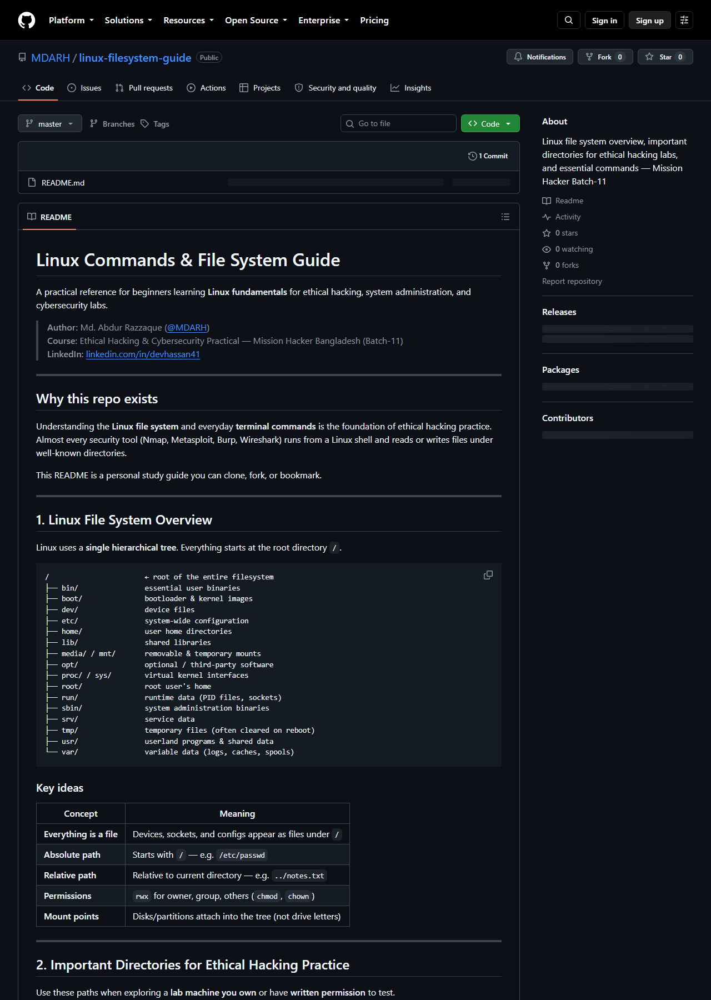
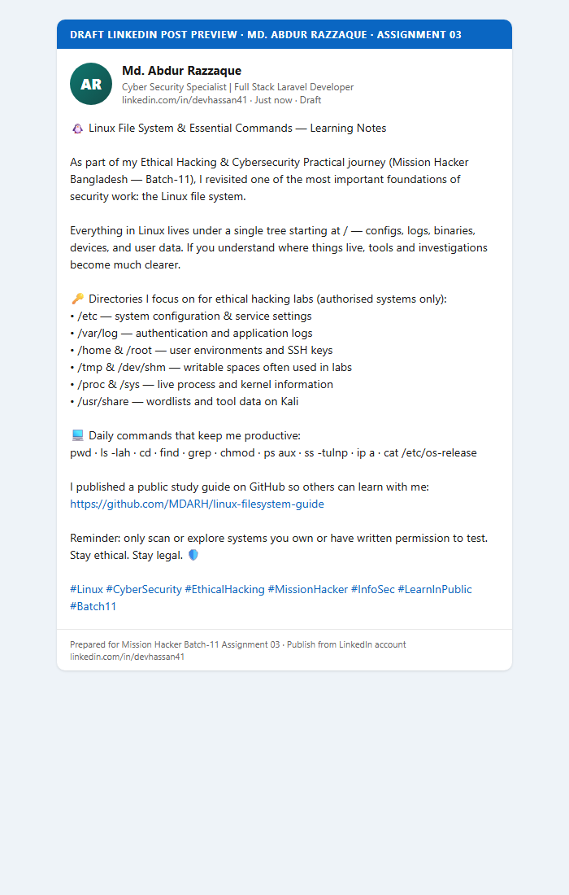

This report is my submission for Assignment 03 for the Ethical Hacking & Cybersecurity Practical (Batch-11) programme. It explains the Linux file system, lists directories useful for ethical hacking labs, documents a public GitHub study guide, and includes a LinkedIn learning post with screenshots.
| Task | Requirement | Section | Status |
|---|---|---|---|
| 01 | Provide Linux file system overview | Section 2 | Completed |
| 02 | List important directories for ethical hacking practice | Section 3 | Completed |
| 03 | Create GitHub repository with educational README + screenshot | Section 4 | Completed |
| 04 | Create LinkedIn post about filesystem & commands + screenshot | Section 5 | Live compose captured |
Linux organises storage as a single hierarchical tree. The top of the tree is the root directory /. Disks are mounted into this tree (there are no Windows-style drive letters). Almost everything — including devices and process information — appears as a file somewhere under /.
/ (example: /etc/passwd).../lab/notes.txt).chmod, chown)./mnt or /media./ root of the entire filesystem ├── bin/ essential user binaries ├── boot/ bootloader & kernel images ├── dev/ device files ├── etc/ system-wide configuration ├── home/ ordinary user home directories ├── lib/ shared libraries ├── media/ / mnt/ removable & temporary mounts ├── opt/ optional / third-party software ├── proc/ / sys/ virtual kernel interfaces ├── root/ home directory of the root user ├── run/ runtime data (PID files, sockets) ├── sbin/ system administration binaries ├── srv/ service data ├── tmp/ temporary files (often cleared on reboot) ├── usr/ userland programs & shared data └── var/ variable data (logs, caches, spools)
| Idea | Meaning |
|---|---|
| Everything is a file | Devices, sockets and configs are accessed through filesystem paths. |
/etc vs /var | Configs are relatively static; logs and caches change frequently. |
/usr vs /opt | Distro packages vs manually installed third-party tools. |
/proc & /sys | Live views of processes, networking and kernel state — not ordinary disk folders. |
The directories below are especially useful when practising on a lab machine you own or have written authorisation to examine.
| Directory | Why it helps ethical hacking practice |
|---|---|
/etc | Service and system configuration (SSH, web servers, network, cron). |
/etc/passwd, /etc/shadow | Account enumeration concepts (shadow requires root on real systems). |
/home | User files, shell history, SSH keys under .ssh/, personal configs. |
/root | Root user’s home — sensitive lab artefacts and admin tooling. |
/var/log | Auth, syslog, web and application logs for monitoring and forensics practice. |
/var/www | Common web document root for web-app labs. |
/tmp, /dev/shm | World-writable areas frequently used in post-exploitation lab scenarios. |
/usr/bin, /usr/sbin | Installed user and admin tools. |
/usr/share | Shared data — on Kali, wordlists and tool datasets often live here. |
/opt | Manually installed frameworks and security tool suites. |
/proc | Live process list, environment, network tables (/proc/net). |
/sys | Kernel/hardware interfaces useful for low-level system understanding. |
/boot | Kernel and bootloader files — boot-security awareness. |
/dev | Device nodes representing disks, terminals and other hardware. |
ls -lah / · ls -lah /etc · ls -lah /var/log · df -h · mount · cat /etc/os-release · find /home -type f -name ".*" 2>/dev/null | head
I created a public GitHub repository with a README that explains the Linux file system, important lab directories, and essential commands so others can learn with me.
linux-filesystem-guide
Repository: https://github.com/MDARH/linux-filesystem-guide

I prepared and posted a LinkedIn post summarising the Linux file system, important directories for ethical hacking practice, essential commands, and a link to the GitHub study guide. The screenshot below is from my live LinkedIn account (Md. Abdur Razzaque) with the post text pasted into LinkedIn’s Create a post dialog.
LinkedIn profile used for posting

linkedin-post.md. In LinkedIn, open the compose dialog if needed, paste, then click Post. After publishing, the activity page will show the live post in the feed.
This report completes the requirements for Assignment 03: a clear Linux filesystem overview, a security-oriented directory list, a public GitHub README repository, and a LinkedIn learning post with supporting screenshots.
I, Md. Abdur Razzaque, declare that this Assignment 03 submission is my own work. The GitHub repository and LinkedIn materials linked above belong to me. I will only use security knowledge on systems I own or am authorised to test.